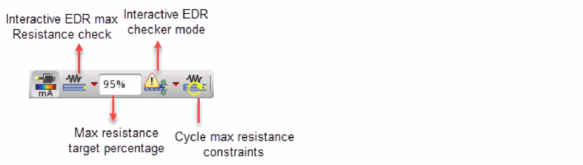

Running an Interactive SDR Maximum Resistance Check
To perform resistance-driven interactive routing, you need to define a maxResistance constraint between two pins, two instance terminals, or between a pin and an instance pin. You can also import the maxResistance constraint from the schematic.
When you start the Create Wire command, the wires and vias interactively connect the pins and automatically estimate the final resistance between the two pins. Based on the estimated resistance and the maxResistance constraint, the wire width and via num cuts of the wire and via being edited are automatically sized so that the final wire resistance is below the value of the maxResistance constraint.
The SDR Maximum Resistance Check mode is disabled for the Create Stranded Wire command. Even when the mode is set to
maxResistance through the weSdrElectricalMode environment variable, the Create Stranded Wire command behaves as if the EM mode is enabled.To run maximum resistance check:
- Select a pin or an instance that you want to route.
-
Click the drop-down arrow next to the Interactive SDR Mode button on SDR Toolbar.
Environment variable: weSdrElectricalMode -
Select the Interactive SDR Max Resistance Check option from the drop-down list.
When the Interactive SDR Max Resistance option is selected, the icons on the SDR toolbar are updated with the icons for maximum resistance.
 -
To control the scaling factor applied to the target resistance when sizing the wires or displaying the resistance information, specify a value in the Max Resistance Target Percentage text box on SDR Toolbar. For example, if you specify the maximum resistance percentage as 50%, it means that the wire is oversized to reach a resistance of
0.5*maxResistance.
Environment variable: weSdrResistanceScale - Choose Create – Wiring – Wire.
- Start creating a wire from the selected pin or the instance.
- Click the drop-down arrow next to the Checker Mode icon on SDR Toolbar.
- From the drop-down menu, select a checker mode. You can select one of the following checker modes: Checker Mode: Enforce, Checker Mode: Notify, and Checker Mode: Off.
-
To toggle between multiple
maxResistanceconstraints, click the Cycle Max Resistant Constraints button on SDR Toolbar.
-
To complete interactive routing, press
Enter.
Related Topics
- Running Interactive SDR Current Density Checks
- Connecting Twigs Automatically
- Current Estimation Modes
Return to top